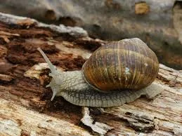
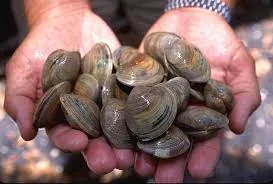
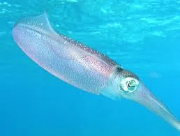
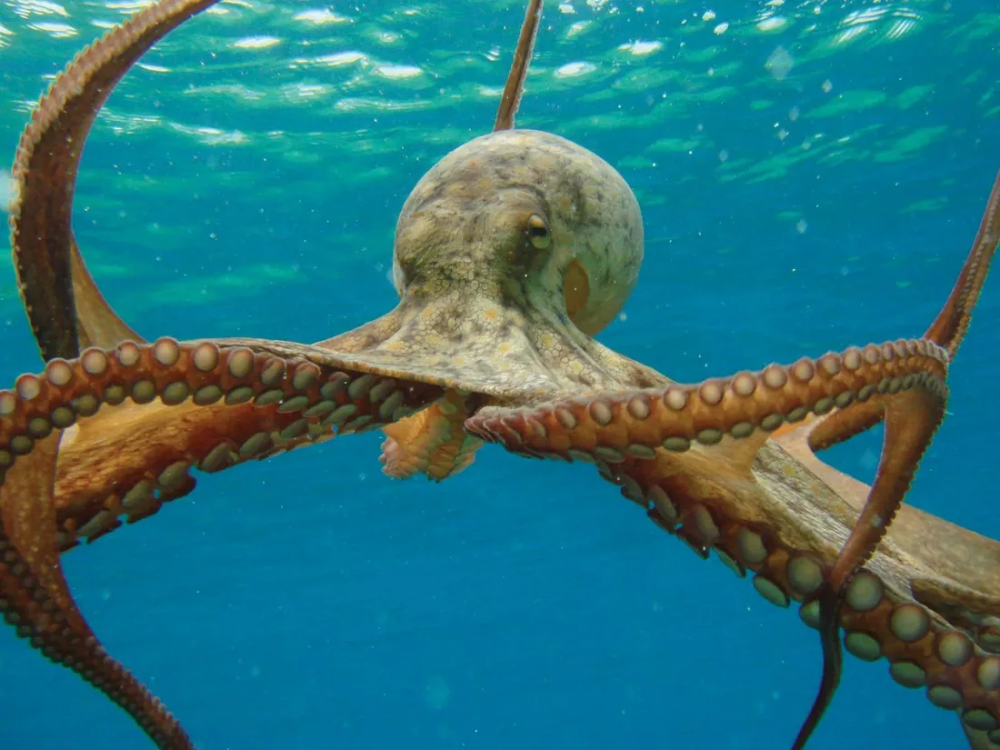

Mollusks
Snail
Gastropoda
Snails have a spiral shell and move slowly on one muscular foot.

Mollusks are soft-bodied animals. Many have a shell, and they live in oceans, rivers and on land. Most have a head, a soft body and a muscular foot to move.
Select “Learn more” on any card for habitat, diet and a fun fact.

Mollusks
Gastropoda
Snails have a spiral shell and move slowly on one muscular foot.

Mollusks
Bivalvia
Clams have two shells hinged together and live buried in sand or mud.

Mollusks
Teuthida
Squids are fast swimmers with eight arms and two longer tentacles.

Mollusks
Octopoda
Octopuses are smart animals that can change colour to hide or to signal.
Most mollusks have a soft body, a shell (not always), a head, and a foot to move.
An octopus has three hearts. Some squids can grow longer than a bus.
Mollusks are amazing creatures, and they help nature in many ways.